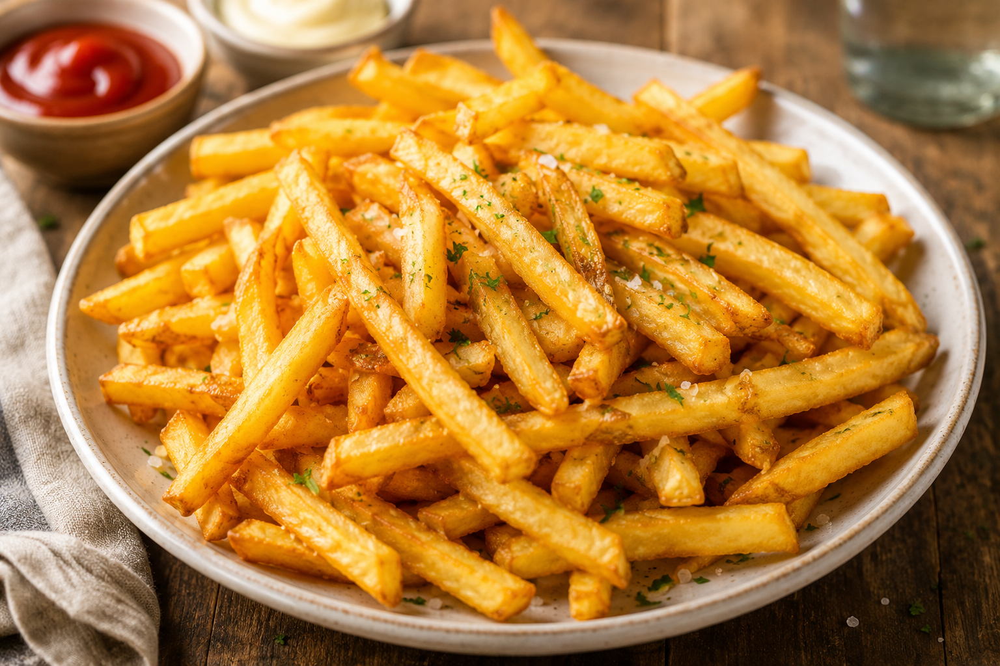

French Fries

Description
French fries are crispy, golden, and easy to make.
They are a simple and delicious side dish made with potatoes, oil, and salt.
Ingredients
- 3 potatoes
- Vegetable oil
- Salt
Steps
- Peel the potatoes.
- Cut the potatoes into thin strips.
- Wash the potato strips with cold water.
- Dry the potatoes with a paper towel.
- Heat the oil in a pan.
- Carefully add the potatoes to the hot oil.
- Fry until golden and crispy.
- Remove the fries from the oil.
- Add salt.
- Serve hot.
Home